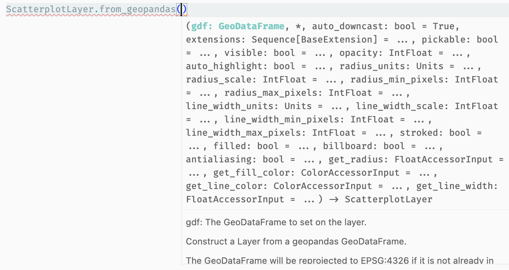

Changelog¶
[0.8.0] - 2024-04-05¶
New!  ¶
¶
- A new
PolygonLayer! This layer renders polygon outlines for easier visibility. @kylebarron in developmentseed/lonboard!330 - An example using
PolygonLayerby @naomatheus in developmentseed/lonboard!351 - Sync view state between JS and Python by @kylebarron in developmentseed/lonboard!448
- Support geoarrow array input into
viz()by @kylebarron in developmentseed/lonboard!427 - Internal architecture documentation by @kylebarron in developmentseed/lonboard!450
Fixes  ¶
¶
- Fix CLI with unset
geometry_nameby @kylebarron in developmentseed/lonboard!451
Full Changelog: github.com/developmentseed/lonboard/compare/v0.7.1...v0.8.0
[0.7.1] - 2024-03-22¶
Fixes ¶
- Fix CLI with geopackage files by @kylebarron in developmentseed/lonboard!434
Full Changelog: github.com/developmentseed/lonboard/compare/v0.7.0...v0.7.1
[0.7.0] - 2024-03-21¶
New! ¶
- There's a new command-line interface (CLI)! Use the
lonboardcommand to quickly visualize one or more data files readable by GDAL! For example:lonboard admins.geojson features.gpkg. By @kylebarron in developmentseed/lonboard!379 - Type hinting for constructors and
from_geopandasmethod. This should make it easier to pass the correct parameters into layers. This has been tested to work in IDEs like VSCode, but unfortunately appears not to work in JupyterLab. By @kylebarron in developmentseed/lonboard!399

- Warn on missing CRS. One of the most common reasons that you might see an empty map is from accidentally visualizing data that is not in EPSG 4326 (longitude-latitude). We now emit a warning for data that doesn't have a CRS defined on the data. By @kylebarron in developmentseed/lonboard!395.
- Lonboard is now on
conda-forge! Install withconda install -c conda-forge lonboard. By @giswqs in developmentseed/lonboard!223 - Add PointCloudLayer. By @kylebarron in developmentseed/lonboard!396
- Add fly-to map action to "fly" the map to a new location. By @kylebarron in developmentseed/lonboard!408
- Docs showcase page by @kylebarron in developmentseed/lonboard!401
- Improve default colors in
viz. We now attempt to apply some basic styling onto data passed intoviz. This will likely further improve in the future. By @kylebarron in developmentseed/lonboard!389
Fixes ¶
- Set exported HTML height to 100% by @kylebarron in developmentseed/lonboard!377
- Raise error on single input to MultiRangeSlider by @kylebarron in developmentseed/lonboard!367
- Fix pandas
to_numericFutureWarning by @kylebarron in developmentseed/lonboard!368 - Fix viewing polygons in local html files by @kylebarron in developmentseed/lonboard!387
- Fix: fix sliced array input for reprojection by @kylebarron in developmentseed/lonboard!391
- Fix: Don't reproject for epsg:4326 input by @kylebarron in developmentseed/lonboard!392
- Fix: Fix weighted centroid calculation by @kylebarron in developmentseed/lonboard!393
- Fix
viz()with__geo_interface__input by @kylebarron in developmentseed/lonboard!426 - Add DataFilterExtension notebook to website by @kylebarron in developmentseed/lonboard!362
- Allow non-compliant geoarrow CRS metadata by @kylebarron in developmentseed/lonboard!369
- Automatically parse geoarrow.wkb to native geoarrow by @kylebarron in developmentseed/lonboard!372
- Parse GeoParquet metadata by @kylebarron in developmentseed/lonboard!407
- CLI: 'crs' in geoparquet metadata should be optional. by @jwass in developmentseed/lonboard!411
Other changes¶
- Creating a new user bug report by @emmalu in developmentseed/lonboard!386
- Update epic template by @emmalu in developmentseed/lonboard!382
- NormalAccessor by @naomatheus in developmentseed/lonboard!376
- Conda: Try including
manifest.infile forstaticfolder inclusion by @kylebarron in developmentseed/lonboard!421 - Switch to animated hero image by @kylebarron in developmentseed/lonboard!423
- Add CRS to GeoDataFrame in notebook examples by @kylebarron in developmentseed/lonboard!419
New Contributors¶
- @emmalu made their first contribution in developmentseed/lonboard!382
- @naomatheus made their first contribution in developmentseed/lonboard!376
- @jwass made their first contribution in developmentseed/lonboard!411
- @giswqs made their first contribution in developmentseed/lonboard!223
Full Changelog: github.com/developmentseed/lonboard/compare/v0.6.0...v0.7.0
[0.6.0] - 2024-02-13¶
New! ¶
- DataFilterExtension by @kylebarron in developmentseed/lonboard!278
- Multi-range sliders for DataFilterExtension by @kylebarron in developmentseed/lonboard!340
- BitmapLayer and BitmapTileLayer by @kylebarron in developmentseed/lonboard!288
- Improved GeoArrow interop by @kylebarron in developmentseed/lonboard!308
- Allow passing a positional
layersobject intoMapby @kylebarron in developmentseed/lonboard!319 - GeoArrow-based multithreaded coordinate reprojection by @kylebarron in developmentseed/lonboard!337
- Support
pyarrow.Tablewithgeoarrow.pyarrowextension types as geometry columns by @jorisvandenbossche in developmentseed/lonboard!218 - Add ecosystem/integrations documentation by @kylebarron in developmentseed/lonboard!350
Fixes ¶
- Add font to index.css to fix static HTML export by @jtmiclat in developmentseed/lonboard!284
- Fix displaying tooltip for first row by @kylebarron in developmentseed/lonboard!287
- accept matplotlib colormap input to apply_cmap by @kylebarron in developmentseed/lonboard!289
- Use preferred OSM tile url by @kylebarron in developmentseed/lonboard!290
- set max zoom on osm layer by @kylebarron in developmentseed/lonboard!291
- Update contributor docs by @kylebarron in developmentseed/lonboard!316
- Check epsg:4326 bounds in layer creation by @kylebarron in developmentseed/lonboard!317
- add reference for installing from source by @kylebarron in developmentseed/lonboard!318
- Fix inferring number of rows per chunk by @kylebarron in developmentseed/lonboard!327
- Fix null checks by @kylebarron in developmentseed/lonboard!331
- Set max number of chunks per layer by @kylebarron in developmentseed/lonboard!332
- Move accessor length validation to serialization by @kylebarron in developmentseed/lonboard!333
- Deduplicate serialization for accessors by @kylebarron in developmentseed/lonboard!334
- Multi-dimensional GPU-based data filtering by @kylebarron in developmentseed/lonboard!335
- Bump anywidget to 0.9 & simplify Wasm initialization by @kylebarron in developmentseed/lonboard!344
- Fix null checks by @kylebarron in developmentseed/lonboard!348
- docs fixes by @kylebarron in developmentseed/lonboard!354
- Add
DataFilterExtensionexample by @kylebarron in developmentseed/lonboard!358 - fix arc layer default arguments by @kylebarron in developmentseed/lonboard!359
New Contributors¶
- @jtmiclat made their first contribution in developmentseed/lonboard!284
- @jorisvandenbossche made their first contribution in developmentseed/lonboard!218
Full Changelog: github.com/developmentseed/lonboard/compare/v0.5.0...v0.6.0
[0.5.0] - 2023-12-01¶
New Features¶
- Improve map height by @vgeorge in developmentseed/lonboard!220
- Add method to apply a categorical colormap by @kylebarron in developmentseed/lonboard!251
- Deduce environment and set map height in colab and vscode by @kylebarron in developmentseed/lonboard!252
- Add various carto basemaps as options by @kylebarron in developmentseed/lonboard!268
- Sync the clicked index back to Python by @kylebarron in developmentseed/lonboard!270
- Set
width_min_pixelsin PathLayer example by @kylebarron in developmentseed/lonboard!276 - Bump deck.gl layers for performance benefits by @kylebarron in developmentseed/lonboard!277
Full Changelog: github.com/developmentseed/lonboard/compare/v0.4.2...v0.5.0
[0.4.2] - 2023-11-13¶
Fixed¶
- Fixed ScatterplotLayer rendering by @kylebarron in developmentseed/lonboard!246
Full Changelog: github.com/developmentseed/lonboard/compare/v0.4.1...v0.4.2
[0.4.1] - 2023-11-13¶
Fixed¶
- Fixed Polygon rendering by @kylebarron in developmentseed/lonboard!243
Full Changelog: github.com/developmentseed/lonboard/compare/v0.4.0...v0.4.1
[0.4.0] - 2023-11-10¶
New Features¶
- New
HeatmapLayer - New
experimentalmodule, with new layers (ArcLayer,TextLayer) and "layer extensions" (BrushingExtension,CollisionFilterExtension). - New "migration" notebook using the experimental
ArcLayer.
Fixed¶
- Add pandas v2 requirement by @kylebarron in developmentseed/lonboard!229
- bump anywidget to 0.7.1 by @kylebarron in developmentseed/lonboard!233
This should error when the JS files have not been included when packaging.
Full Changelog: github.com/developmentseed/lonboard/compare/v0.3.0...v0.4.0
[0.3.0] - 2023-11-07¶
New Features¶
- Save widget to standalone HTML file by @kylebarron in developmentseed/lonboard!199
- Support for rendering inside Visual Studio Code
- Allow customized picking radius by @kylebarron in developmentseed/lonboard!212
- New example notebooks
- Automatically downcast data types in
from_geopandasby @kylebarron in developmentseed/lonboard!195
Fixed¶
- Allow pandas series as accessor to FloatAccessor by @kylebarron in developmentseed/lonboard!208
- Raise error when creating class with unknown keyword argument by @kylebarron in developmentseed/lonboard!209
- fix tooltip rendering when not hovering over an object by @kylebarron in developmentseed/lonboard!215
Full Changelog: github.com/developmentseed/lonboard/compare/v0.2.0...v0.3.0
[0.2.0] - 2023-11-01¶
Breaking Changes¶
- Layers no longer render a map object. Instead, pass one or more layer instances into a
lonboard.Mapand display that.
New Features¶
- Support multiple layers on a single map.
- Tooltip with data information on hover.
- Allow hex string color input to ColorAccessor.
- Versioned documentation website
- New examples
- Experimental API to change map height
Fixed¶
- Fix handling of 3d coordinates by @kylebarron in developmentseed/lonboard!160
- Improved validation error messages by @kylebarron in developmentseed/lonboard!161
New Contributors¶
- @chrisgervang made their first contribution in developmentseed/lonboard!150
Full Changelog: github.com/developmentseed/lonboard/compare/v0.1.2...v0.2.0
[0.1.2] - 2023-10-24¶
- Actually update
@geoarrow/deck.gl-layersto version 0.2.0, whoops
[0.1.1] - 2023-10-23¶
- Updates to
@geoarrow/deck.gl-layersversion 0.2.0: - Fixed MultiPolygon rendering
- Fixed rendering of polygons with holes.
- Polygon rendering is roughly 35% faster.
[0.1.0] - 2023-10-17¶
- Initial public release.
- Initial support for
ScatterplotLayer,PathLayer, andSolidPolygonLayer.